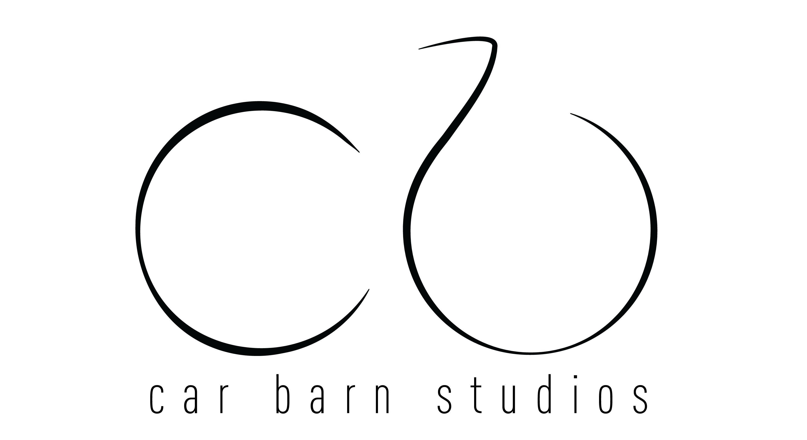
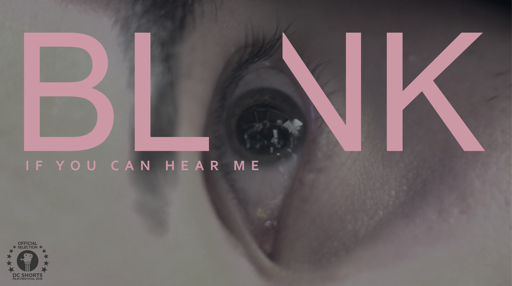
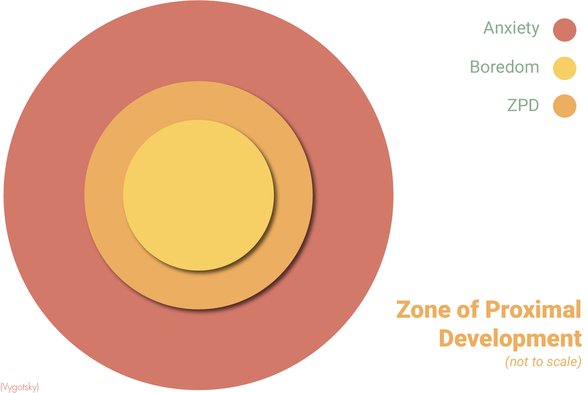
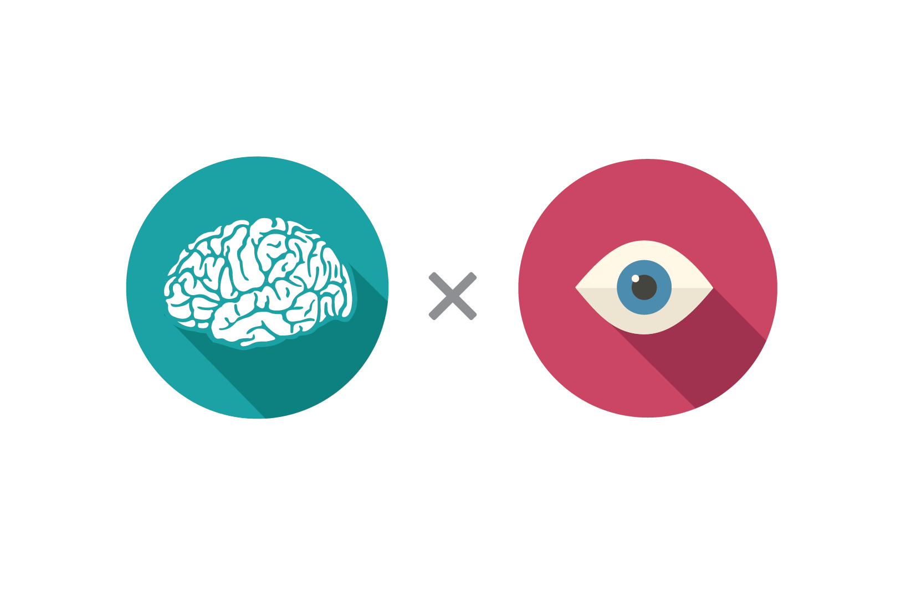
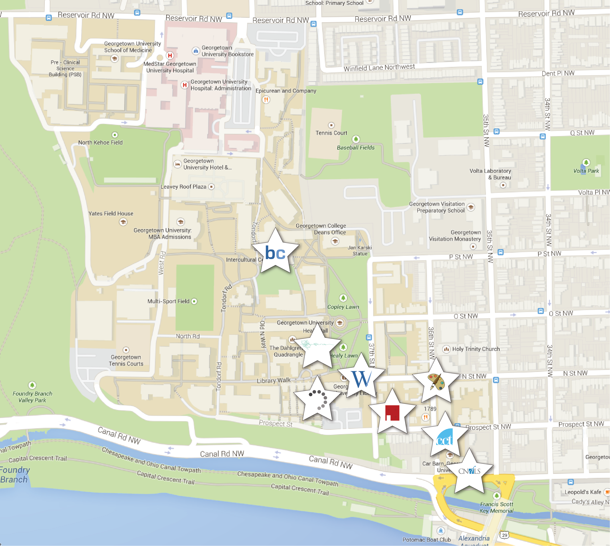
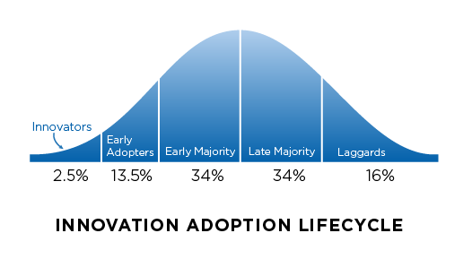
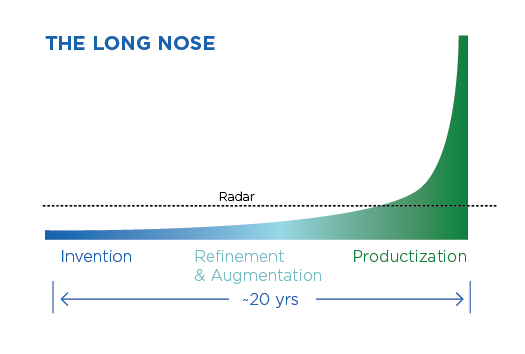

Logo for Lambda-Lab, housed in the TU Delft Web Information Systems Group.
Official Poster for Oustaz (2016), directed by Bentley Brown.
Logo for the Car Barn Studios design firm.
Official Poster for Blink If You Can Hear Me (2015), directed by Nathan Danskey and Bentley Brown. [Watch]
Montage from a road trip featuring John, Bentley, and Nathan. DC → NYC → Boston → Burlington → Montreal → Quebec City → Cape Breton Island → Portland
Recap montage from Georgetown Media Fest, where an annual interactive gallery event where students can showcase their musical, art, performance, or film work to the community.
Music video for "Shukran My Totem" by Mosno al-Moseeki, from the album NOVELLA (Tarvo Music Productions) available on mosno.net. Storyboard, production and direction by Bentley Brown. Co-production by Nathan Danskey.

Poster I made for Georgetown's password change initiative.
For when I describe one of my favorite learning concepts.
For when I had to explain what a MOOC was.
For when I talk about metacognition.
I'm really fascinated by sociolinguistics.
Proposing a multimodal learning study using eye tracking and EEG in online learning environments.

Logo and tee shirt design for Georgetown's Graduate Student Organization, where I was Directory of Technology and Web Development for a year.
Promoting Hoya Roundtables, where Georgetown students and administrative leaders get together to discuss areas of student interest.

Poster presented at Educause 2014 showing the GeorgetownX Integrative Learning Approach.

Visualizing the spread of technology-enhanced instructional strategies throughout Georgetown.
Promoting the use and awareness of Georgetown's collection of design studio spaces.
My rendition of the Innovation Adoption Cycle.
My visual rendition of the long nose of innovation.